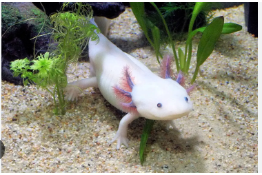

ajolote mexicano
Riesgo de la fama
La popularidad de estos animales como mascotas les ha catapultado a una fama con la ayuda de las redes sociales. En 2023, han conseguido al menos 3100 millones de visitas en inglés y 773,8 millones en español solo en TikTok.
Probablemente tenga algo que ver con sus grandes cabezas y grandes ojos, que nos recuerdan a los bebés humanos y activan nuestro impulso de cuidar, dice Oriana Aragón, psicóloga social de la Universidad de Cincinnati (Estados Unidos).
"La belleza influye enormemente en el comportamiento humano", afirma Aragon. Gracias a nuestro cableado evolutivo, la visión de algo lindo desencadena una oleada de emoción en nosotros, que a veces incluso nos hace querer apretarlo o aplastarlo, una respuesta que Aragón y su equipo de la Universidad de Yale investigaron en 2015.
La aparición de los ajolotes en videojuegos populares también puede estar detrás del aumento de su demanda como mascotas. Y eso puede conllevar peligros si la gente no sabe cómo cuidar a los animales.